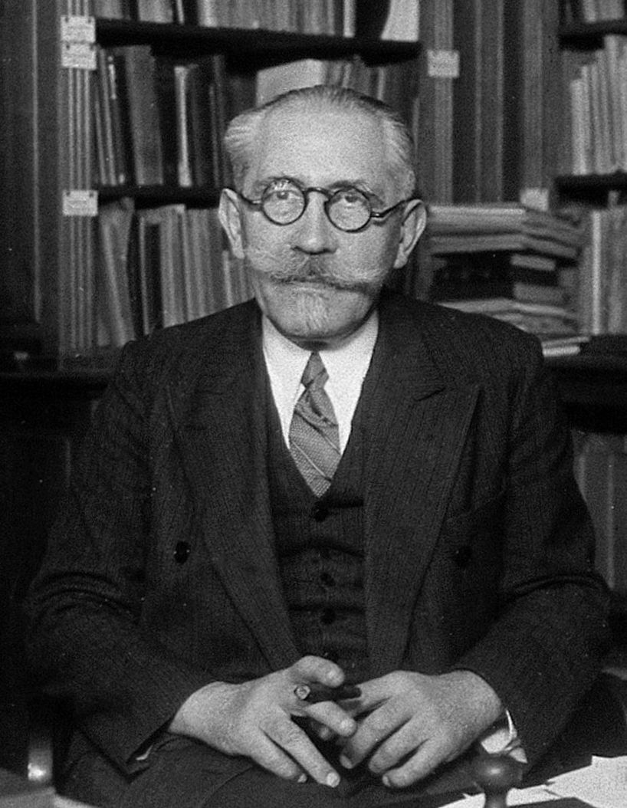
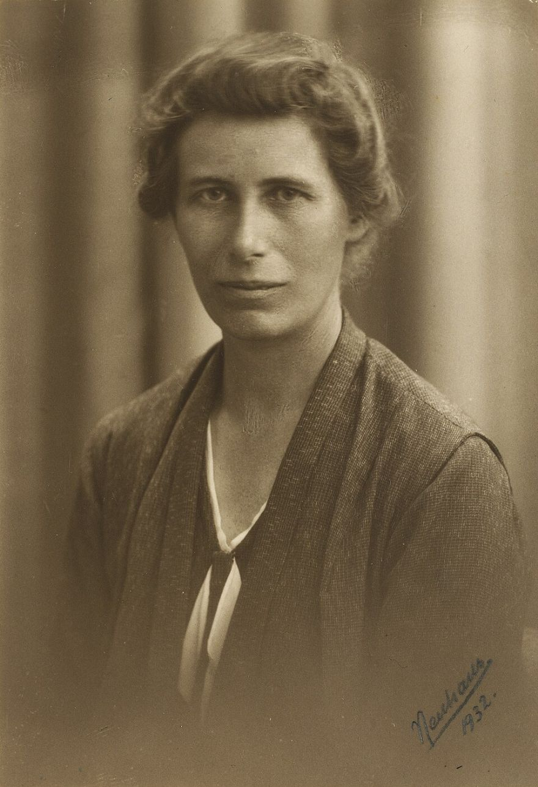
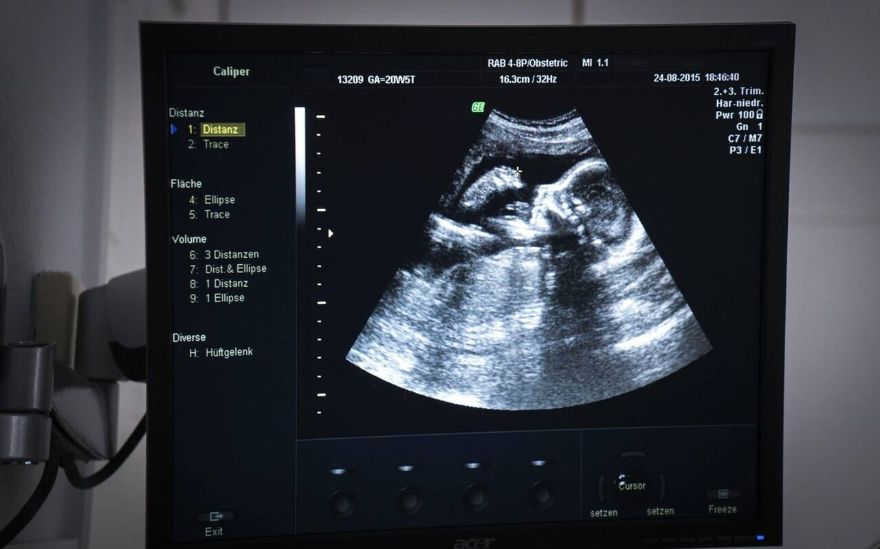

오늘의 안내자들
교과서 95~97쪽 학습 목표 · 인물은 연도·업적만 사실 기준, 말풍선은 수업용 재구성
크리스티안 하위헌스 1629~1695 · 네덜란드
경계에 닿은 파동은 거기서 새로운 파동의 출발점이 돼. 일부는 되돌아가고, 일부는 건너가지!
코너: 반사와 투과 (③④⑤)

폴 랑주뱅 1872~1946 · 프랑스
석영 결정으로 초음파를 쏘고, 돌아오는 에코로 물속의 물체를 찾아 보자!
코너: 소나 (⑦⑧)
제1차 세계대전 중 초음파 수중 탐지 연구.
도
이언 도널드 1910~1987 · 영국
금속 결함 탐지기를 몸에 대어 봤더니, 몸속에서도 경계마다 에코가 돌아왔어요.
코너: 초음파 진단 (⑨)
1958년 산부인과 초음파 진단 논문. 초상은 수록하지 못함.

잉에 레만 1888~1993 · 덴마크
지진파가 지구 속 어딘가에서 반사되어 돌아와. 액체 핵 속에 단단한 중심이 있어!
코너: 지진파 (⑩⑪)
1936년 지구 내핵 발견.
오늘의 큰 질문 4개
① 파동이 경계를 만나면 어떻게 될까? (③)
② 고정단에서는 왜 뒤집히고, 자유단에서는 왜 그대로일까? (④⑤⑥)
③ 되돌아오는 시간으로 어떻게 거리를 알까? (⑦~⑩)
④ 탄성파는 우리 생활에서 어디에 쓰일까? (⑧~⑫)
성취기준 탄성파의 진행·투과·반사를 이해하고 활용 예를 찾아 과학의 유용성을 인식한다. 앞 덱 ‘탄성파 ①’(표현·종류·위상)에 이어지는 두 번째 덱이다.
경계에서 — 투과와 반사
교과서 95쪽 · 그림 Ⅲ-8 파동의 경계면에서의 반사와 투과 (교육용 모형, 두 줄의 장력은 같음)오른쪽 줄의 속력 v₂ (v₁ 기준)
재생 속도
펄스
파동 묶음
↺ 다시
성질이 다른 매질을 만나면 파동의 일부는 투과, 일부는 반사한다. 투과파는 항상 입사파와 같은 모양이고, 반사파의 모양은 두 매질의 성질에 따라 다르다.
같은 장력이면 무거운(굵은) 줄에서 파동이 더 느리다.
하위헌스 경계에서는
경계에 닿은 점이 새 파동의 출발점이야. 위쪽 줄로 되돌아가는 몫이 반사, 건너가는 몫이 투과!
초음파 진단 — 몸속의 에코
교과서 96쪽 · 그림 Ⅲ-9 초음파 영상 진단 장치(2~13 MHz) · 값은 대략적 예시장기 경계의 깊이
도
이언 도널드 1958 산부인과 초음파
공업용 결함 탐지기를 몸에 대어 봤더니, 경계마다 에코가 또렷하게 돌아왔어요.

임신 20주 태아의 초음파 영상

초음파 탐촉자(송수신기)
경계 양쪽의 딱딱한 정도(음향 임피던스) 차이가 클수록 에코가 세다. 뼈는 에코가 강하다.
🔊 탄성파 ② 되돌아오는 파동 — 고정단·자유단 반사와 이용 · 역학과 에너지 Ⅲ. 탄성파와 소리
조작법
키보드
→Space
다음 (단계가 있는 슬라이드는 단계부터 진행)
←
이전 (단계도 거꾸로)
HomeEnd
처음 / 마지막 슬라이드
F
전체 화면
Q
이 슬라이드의 발문(학생용 질문)을 화면 위에 크게 띄우기 / 닫기 (아무 곳이나 클릭해도 닫힘)
N
오개념 교정 노트 열기/닫기 (교사용)
T
다크 / 라이트 전환
?Esc
조작법 열기 / 닫기
화면 조작
→ / Space
다음 단계·슬라이드
Q
학생 발문 열기
N
오개념 노트
슬라이더·칩
시뮬레이션 조작
파동 묶음
연속된 파동의 위상 반전
슬라이더 키보드
슬라이더를 클릭해 초점이 있는 동안에는 ← → 가 값 조절에 쓰입니다. 마우스로 놓으면 자동 해제
수업 진행 팁
반사 장면은 속도를 줄이고 벽 근처에서 단계별로 본다. 말풍선은 수업용 재구성이다.
1 / 1